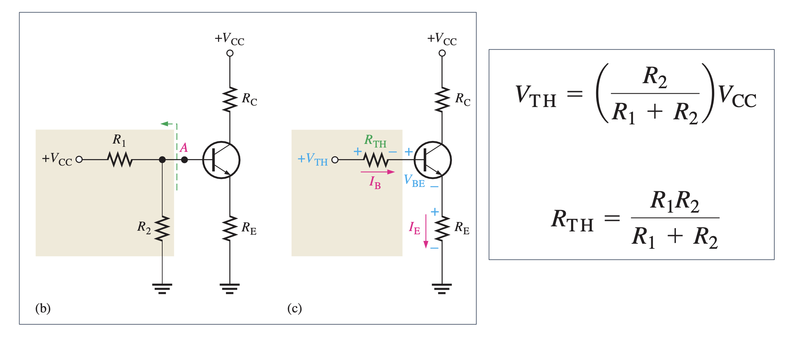
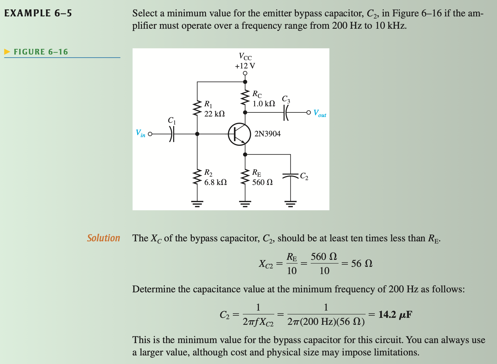
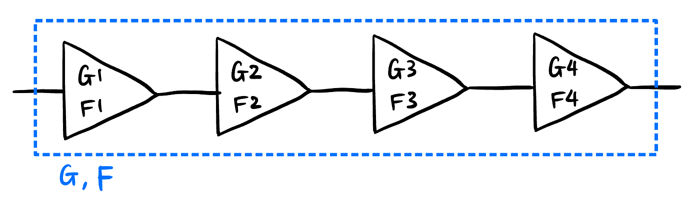
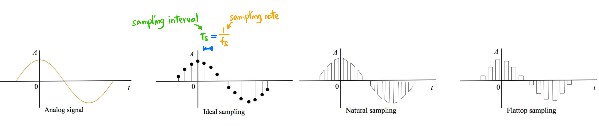

CCD Crash Course 通信电路速成笔记
宇宙安全声明: 本笔记是本人电子科技大学格院大三《通信电路设计》2025 年课程的期末考试复习笔记, 遵循个人学习习惯与轨迹, 但我将尝试保留所有概念的动机和尽可能地解释原因, 不保证覆盖全部考点, 不保证严谨性和绝对正确性.
EXAMPLE 是PPT或往年的经典题目, 框起来的公式必须记住或独立推导!!! 概念用粗体表示, *号章节了解即可, 其他的都有可能考!!!
本文 All Right Reserved 保留所有权利, 禁止商用和任何形式的转载!
1 Change of Mind 这个可能有用
人生苦短, 你还应去仰望深夜星河万顷的浩瀚，去聆听黄昏海风拂面的低语.
事实证明 \(5\) 天学完 CCD 是可行的.
别当数学来学: 模电里面有很多 abuse of notation (AoN, 比如你看看「增益」这个词在 PLL 里面是怎么用的, dddd) 和抽象指标 (Carson’s rule 首当其冲, Modulation index 等) 和符号, 他们并不值得你品味和推导, 因为这里面人为的因素太多 (比如规定 \(-3\text{ dB}\) 就很小了, Carson 频带内包含 \(98\%\) 的能量等等), 这不是数学, 即使你理解了其推导也没有任何意义.
不同问题情景下我们大脑中的模型是不一样的, 比如:
- 普通电路分析中二极管就是单向导通; 但是 BJT 的 DC 分析中, 要用到 \(0.7\text{ V}\) 的开启电压; 而 AC 分析中由于小信号, \(0.7\text{ V}\) 这个模型就不能用了, 而要用更复杂的 Shockley 方程.
- 放大电路中 \(C, L\) 都可以看作理想, 但是在 RLC 电路中 (Section 6) 就不行.
- 适合的模型才是最好的, 不是越复杂越精确越好.
关于「电压」和「电流」, 不要认为电压才是我们可以控制的, 然后再通过给电阻来控制电流. 有些元件 (BJT) 其实本质是通过操控电子的流动趋势来主动操控电流, 电流确定了以后, 再通过加电阻来获得电压.
关于「背诵」的价值的问题, 有一些是纯 sb (比如某4046的参数, FM 的最大频偏), 还有一些 (IF 放大器比 RF 放大器更不容易发生自激振荡) 这种性质, 如果给足你时间进行分析和实验, 你是可以独立地发现这个结论的. 你不知道这个结论只是时间的问题, 所以你可以非常无负罪感地将它记下来, 因为你明白这不是死记硬背, 而是用前人的经验给自己节约时间1.
考虑负载的习惯: 往往一个电路的性质 (滤波中心频率, 增益) 不仅取决于电路本身的参数, 还取决于你把它接在什么上面 (经典例子 Section 6.4). 你接在了抽象的东西上面, 它的作用也就变了. 这也是引入 「输入阻抗」和 「输出阻抗」 的动机.
往往一个问题的解决方法的得出会经历若干个重要思想, 这些思想:
- 的数量没你想象的多, 可能只有 4-5 个. 以下概念的引入可以称作「思想」:
- 稳态解和瞬态解是完全不同的两个思维角度: 比如反馈实际上是需要时间的, 输出不断地被送回输入, 然后再改变输出, 再回来改变输入, 这个过程既耗实际时间, 也耗思维时间. 当反馈电路变得很复杂时这个过程几乎不可能被人类的大脑想清楚, 于是我们才用「假设量-列方程」的方法来将这个过程各个量权衡的结果需要满足的关系形式化出来, 我们解方程的过程就已经符号化地完成了整个分析过程并求出了最终的稳态解.
- Phasor: 正弦波与复数的同构, 接着引入阻抗, 颠覆了我们对信号的 mental picture (“信号是时域的”这种我们自己都无法察觉的直觉).
- 信号是复值的: 傅立叶变换的基础思维, 这个思想都没有的话你就完全不理解 Fourier.
- 传递函数及 \(s\) 域: Phasor 只是频谱里的一个频率点了, 频谱甚至可以外延到 \(s\) 域, 发现系统稳定性等可以在 \(s\) 域中很好地描述.
- 信号流图: 给机械系统、电路系统甚至生物进化等等提供了统一的分析方法, 进而发展出控制论.
- 不 trivial, 以至于通过这些思想堆叠出来的解决方法看起来非常不直观和莫名其妙. 但是其实他们就是基于这些思想逻辑推理的自然产物2!
- 的数量没你想象的多, 可能只有 4-5 个. 以下概念的引入可以称作「思想」:
1 有些数学家对工程学嗤之以鼻的原因本质上是对「经验主义」的怀疑.
2 这一点在纯数上尤为明显.
2 Transistors 晶体管元件
2.1 Diode 二极管 ★☆☆☆☆
以下是二极管的三种由简入繁的模型:
Forward/Reverse Bias 正/反向偏置
Threshold / Barrier potential 开启电压 \(V_t\) : PN 结导通所需克服的势垒电压.
- Silicon 硅管 \(\boxed{V_t = 0.7 \text{ V}}\) (默认这个值!)
- Germanium 锗管 \(V_t = 0.3 \text{ V}\)
- BJT 的 BE 间在 DC 工作模式下也有这个开启电压.
*Shockley 二极管方程: \[ I_{\text{D}} = I_{\text{S}} \left( e^{\frac{V_{\text{D}}}{V_{\text{T}}}} - 1 \right) \tag{1}\]
- \(I_{\text{S}}\) 反向饱和电流 (非常小 \(10^{-15}\))
- Thermal Voltage 热电压 \(V_T\): \[\boxed{V_T = \frac{kT}{q}}\]
- 玻尔兹曼常数: \(k = 1.38 \times 10^{-23} \text{ J/K}\). 工作温度: \(T = t + 273.15 \text{ K}\). 电荷量: \(q = 1.6 \times 10^{-19} \text{ C}\).
- 室温 \(20^{\circ}\) 下: \(\boxed{V_{\text{T}} = 25 \text{ mV}}\)
- “Diode Mixer”: 用到了这个方程, 见 Section 5.1.1.
- Varicap Diode: 其实是电容, 见 Section 7.3.
2.2 MOSFET 场效应管 ★☆☆☆☆
JFET 可近似看作 depletion-mode MOSFET (Figure 1), 因此省略 JFET 的讨论.
结构: Gate, Source, Drain 栅极, 源极, 漏极.
- S 源极指的是电子的源 而不是电流的源. D 漏极同理.
- 计算题一般假设 \(I_{\text{S}} = I_{\text{D}}\).
- JFET 的 GS 在 \(V_{\text{GS}}\) 下可能有极微弱的 leakage current3 \(I_{\text{GSS}}\), 造成 input resistance 输入电阻 (很大): \[R_{\text{in}} := \left\vert \frac{V_{\text{GS}}}{I_{\text{GSS}}} \right\vert\]
- MOSFET 由于有氧化层隔离, GS 无电流.
G 闸门, \(V_{\text{DS}}\) 水压, \(I_{\text{D}}\) 水流
3 AoN, 应该记为 \(I_{\text{GSL}}\) (gate-source leakage).
MOSFET 分类:
Figure 1: 箭头 in 代表 n-channel - P/N channel 通道: 根据沟道类型 (不是 substrate 类型!), 空穴: P channel, 电子: N channel.
- Depletion/Enhancement mode 耗尽/增强型: 默认 (GSS, gate-source short) 闸门的状态, 导通: depletion, 不导通: enhancement (符号上断开).
- \(V_{\text{GS}}\) 控制闸门的方法是不一样的 (Figure 1):
- P-channel D Mode: 正电压 -> 吸引 n substrate 的电子 -> 中和掉 channel 的空穴 -> 截止
- N-channel D Mode: 负电压 -> 吸引 p substrate 的空穴 -> 中和掉 channel 的电子 -> 截止
- P-channel E Mode: 负电压 -> 排斥 n substrate 的电子 -> 增加 channel 的空穴 -> 导通
- N-channel E Mode: 正电压 -> 排斥 p substrate 的空穴 -> 增加 channel 的电子 -> 导通
特性:
- 以 S 源极为基准, 我们关心 \(V_{\text{GS}}, V_{\text{DS}}, I_{\text{D}}\) 三者的关系 (\(I_{\text{D}}\) 曲面)
- Q-point (Quiescent)4: 静态工作点, Figure 2 上的每个点都是 Q-point.
- 引入 Q-point 的原因是: 半导体元件在不同的输入变化频率下 即使输入的数值相同, 输出会有所差别. Q-point 代表这些点都是在输入变化很慢的情况下测出来的值, 即 DC 工作点、稳态值.
- 所以模拟电路有必要区分 DC 和 AC 分析, 他们是不一样的.
Figure 2: \(I_{\text{D}}\) 曲面 - Drain curve 漏极特性曲线: 固定闸门 \(V_{\text{GS}}\) 后的 水压与水流的关系.
- Ohmic region 欧姆区: 相当于固定电阻. (改变闸门可以充当可变电阻)
- Active region 饱和区: 水流不变了.
- Breakdown region 击穿区: 水压太大, 水管坏了.
- Pinch-off 对应的点是抛物线.

Drain curve 漏极特性曲线 - Transfer curve 转移特性曲线: 水压足够大时水流和闸门的关系 (\(I_{\text{D}}\) 曲面沿 \(V_{\text{DS}}\) 轴的投影).
- 抛物线 关系.
- 默认饱和电流 \(I_{\text{DSS}}\): Drain to Source current with gate Shorted.
- 跨导 \(g_m\) (电阻的倒数): Drain curve 的斜率, 与闸门电压有关.
Figure 3: Transfer curve 转移特性曲线
4 这是一个典型的教科书讲不明白的问题.
2.3 BJT 三极管 ★★★★☆
大写表示 DC 工作模式 (e.g., \(I_{\text{E}}, \beta_{\text{DC}}\)), 小写表示 AC 工作模式 (e.g., \(I_{\text{e}}, \beta_{\text{ac}}\)). \(\tilde{I}\): phasor, \(i\): 瞬时值.
2.3.1 结构 ★☆☆☆☆

结构: Base, Collector, Emitter 基极, 集电极, 发射极.
- npn, pnp 两种, 因 doping 浓度不同而不对称 ! npn 性能更好.
模型及可观测参数
- r Parameters (resistance): \(r'_e\) (最重要★★★★★), \(r'_b, r'_c, \alpha_{\text{ac}}, \beta_{\text{ac}}\)
Figure 4: 根据 \(r'_b \approx 0\) 和 \(r'_c \approx \infty\) 来简化模型 - h Parameters (hybrid): (Omitted).
2.3.2 性质 ★★★★★
- 特征曲线
- 一般都在 active region 工作区
- \(I_C\) 不一定是 \(I_B\) 的 \(\beta_{\text{DC}}\) 倍, 在饱和区就不行 (Figure 5).
AC & DC 下都有的性质:
- 箭头代表 总 (E) 电流 参考方向, 不一定是实际电流方向. 三者满足 KCL: \[\boxed{ I_{\text{E}} - I_{\text{C}} - I_{\text{B}} = 0} \tag{2}\]
DC 工作模式性质:
- \(\alpha, \beta\) 参数:\[ \alpha_{\text{DC}} := \frac{I_{\text{C}}}{I_{\text{E}}} \approx 0.99, \quad h_{\text{FE}} = \boxed{\beta_{\text{DC}} := \frac{I_{\text{C}}}{I_{\text{B}}}} \approx 99\]
- B, E 可看作导通的二极管, PN结之间存在开启电压: \[\boxed{V_{\text{BE}} = V_t \approx 0.7 \text{ V}}\]
AC 工作模式性质:
发射极动态电阻 \[\boxed{r'_e \approx \frac{V_T}{I_{\text{E}}} = \frac{25\text{ mV}}{I_E}}\]
\(\beta\) 参数: \[ \beta_{\text{ac}} := \frac{\Delta I_{\text{C}}}{\Delta I_{\text{B}}}\]
- 造成 \(\beta_{\text{DC}} \neq \beta_{\text{ac}}\) 的原因是 \(I_{\text{C}}\)-\(I_{\text{B}}\) 关系是曲线:
DC 模式相当于全局的流形, AC 模式相当于局部的切空间
Mental picture: 当我们将信号输入到 BJT 的 Base 时, 几乎就是 DC 信号, 波动幅度非常小!
BJT 正常工作时, 将 BE 看作导通的二极管, 自然有电压 \(V_t \approx 0.7 \text{ V}\). \(r'_e\) 不能被 DC 信号感受到, 只有小信号才能感受到. 小信号需要用更精确的模型 Equation 1 来计算. Figure 6 在 \(V_{BE} = 0.7\text{ V}\) 处的斜率就是 \(r'_e\) 的倒数: \[ \text{slope}|_{V = 0.7\text{ V}} = \frac{I_S}{V_T} \cdot e^{\frac{V}{V_T}} = \frac{1}{r'_e} \]
我们 利用 Equation 1 将 \(e^{\frac{V}{V_T}}\) 用 \(I_E\) 表示: \[ \text{slope}|_{I = I_E} = \frac{I_S}{V_T} \cdot \left(\frac{I}{I_S} + 1\right) = \frac{I}{V_T} + \underbrace{\cancel{\frac{I_S}{V_T}}}_{\to 0} = \frac{1}{r'_e} \]
求得: \[ r'_e = \frac{V_T}{I} \]
\(I\) 就是当前 E 上的直流电流大小!
2.3.3 CE, CC 与 CB
- CE (Common Emitter) 共射放大器:
- \(A_v \gg 1, A_i \gg 1\): 电压、电流增益都很高.
- 可以推导: Base 输入电阻 \(\boxed{R_{\text{in (base)}} = \beta_{\text{ac}} r'_e}\)
- CC (Common Collector) 共集放大器:
- \(A_v \approx 1\): 基本不会放大电压, 所以称为 Emitter Follower 跟随器.
- \(A_i \gg 1\): 用于电流放大, 而不用于电压放大.
- 输入阻抗很高.
- CB (Common Base) 共基放大器:
- \(A_v \gg 1\): 电压增益 \(A_v\) 很高.
- \(A_i \le 1\): 电流只会减小.
- 输入阻抗很低.
3 Network Analysis 网络分析 ★★☆☆☆
3.1 Thevenin & Norton 定理
任何一个只有电压源、电流源和电阻的网络, 都可以等效为 一个有内阻的电压源 或 一个有内阻的电流源5.
5 任何线性二端网络都可以这么等效, 原因是电源的 \(V\)-\(I\) graph 是直线! 而非理想的 电压源 和 电流源 也是直线, 二者自由度都是 \(2\), 因此相互等价.
\[ \boxed{ \begin{aligned} V_{\text{TH}} &= V_{\text{open}} \\ I_{\text{N}} &= I_{\text{short}} \\ R_{\text{TH}} &= R_{\text{N}} = \frac{V_{\text{open}}}{I_{\text{short}}} \\ \end{aligned} } \tag{3}\]
3.2 Input & Output Impedance 输入/输出阻抗
一个线性网络作为负载时一定可以等效成一个电阻 (输入阻抗), 作为电源时一定可以等效成一个非理想电压源或电流源 (内阻就是输出阻抗).
- \(R_{\text{in}}\) 就是该网络作为负载时两端的电压和电流之比.
3.3 Conjugate Matching & Maximum Power Transfer 匹配负载与最大功率传输
阻抗匹配是一个实际中要考虑的问题, 而不是在纯理论层面上的问题, 所以会觉得有点脱节的感觉.
- 问题建模: Section 3.1 的结论对稳态交流电路同样适用 (见 Figure 7)! 任意复杂线性网络:
- 从外面看都只是一个内阻 \(\tilde{Z}_0\) 的电压源 \(\tilde{V}_0\) (相当于 Thevenin 等效).
- 看外面都是一个阻抗为 \(\tilde{Z}_L\) 的负载.
- 问: 给定工作频率6 \(\omega_0\) 和 \(\tilde{V}_0\), \(\tilde{Z}_0, \tilde{Z}_L\) 满足什么的时候负载热功率最大?
6 注意一个匹配电路只在一个工作频率下匹配, 而不是所有频率! 而我们会看到, 匹配后的频率恰好是协振频率 \(\omega_0\), 所以用 \(\omega_0\) 来表示工作频率.
当内外阻抗互为共轭时, 称该电路阻抗匹配, 此时负载热功率7达到最大. \[\boxed{\tilde{Z}_0 = \tilde{Z}_L^*} \tag{4}\]
阻抗匹配时相当于只有两个一样的纯电阻
7 稳态电路功率有很多定义 (比如: 有功功率, 无功功率, 视在功率, 热功率等), 这里指热功率.
- Reflection Coefficient 反射系数: 反映了负载阻抗与源阻抗的匹配程度, omitted.
设 \(\tilde{Z}_0 = R_0 + jX_0, \tilde{Z}_L = R_L + jX_L\), 负载的热功率: \[ \begin{aligned} P_L &= I_{\text{rms}}^2 R_L \\ &= \frac{1}{2} |\tilde{I}|^2 R_L \\ &= \frac{1}{2} \left| \frac{\tilde{V}_0}{\tilde{Z}_0 + \tilde{Z}_L} \right|^2 R_L \\ &= \frac{1}{2} \frac{|\tilde{V}_0|^2}{(R_0 + R_L)^2 + (X_0 + X_L)^2} R_L \\ \end{aligned} \]
要 \(P_L\) 最大, 分母必须最小, 显然当 \(X_0 + X_L = 0\) 时即 Equation 4 时取最小.
3.4 Matching Network Design 匹配网络设计
有很多种匹配网络可供选择: \(\pi, T\) 形网络等, 本文只考虑 \(T\) 形网络. 本章重度依赖 Section 6.2.2 的结论.
- 问题描述: 给定 纯电阻内阻 \(R_0\) 的交流电源 \(V_0\) 和 纯电阻负载 \(R_L\), 在它们中间设计一个 \(T\) 形网络使阻抗匹配.
- 既然是设计匹配网络, 就不能用纯电阻了 (Figure 8), 不然能量白白消耗掉了, 只能用纯电抗 \(X\) 元件 (\(X_p, X_s\) 都可以是 \(L\) 或 \(C\), 一般串联的用 \(L\), 并联的用 \(C\)), 它们只储能, 不耗能.
- 解法: ★★★★★
- 根据 \(R_0, R_L\) 的大小选择网络类型: 见 Figure 9.
- 用电阻之比算 \(Q\): Equation 9 的第一个公式.
- 再用 Figure 16 的两个公式得出 \(X_s, X_p\).
- 最后用 \(X_s, X_p\) 计算出 \(L, C\) 的值: 一般串联的用 \(L\), 并联的用 \(C\).

4 Amplifier Circuit 放大电路分析 ★★★★☆
4.1 分析纲领 ★★★★★
一个放大电路对 DC 和 AC 的作用是单独的, 我们先分开分析, 实际上的情况是两个分析结果的叠加!
DC 和 AC 的情况下, 放大电路的等效电路是不一样的.
我们只需要考虑等效电路, 电容和电感在等效电路中是不存在的.
- DC 分析:
电容开路, 电感短路8.
画 Thevenin 等效电路
Figure 10: DC等效电路 及其Thevenin等效
- AC 分析:
- 电容短路, 电感开路.
- \(V_{\text{CC}}\) 相当于接地 (任何不变的信号都相当于接地)
- 电压、电流默认取 RMS \(V_{\text{rms}}\) 计算 (峰值也行其实), \(\boxed{V_p = \sqrt{2} V_{\text{rms}}}\)
- Bypass Capacitor: 与某个电阻 \(R\) 并联的电容, 使得交流信号在至少 \(f_{\min}\) 频率下看起来无阻抗, \(C\) 必须足够大 (\(X_C\) 必须足够小): \[\boxed{X_C \le \frac{R}{10}}\]
- 将等效电路中的 BJT 换成 Figure 4 (b) 中的模型, 然后当作正常电路分析即可.
- DC 分析:
8 理想电容记为 \(C_{\infty}\), 理想电感记为 \(\text{RFC}\) (Radio Frequency Choke).
- 最后 DC 和 AC 的结果叠加起来, 注意 这时候 \(V_{\text{CC}}\) 不能接地了9, 所有元件都正常.
9 特别是在分析为什么 Common Emitter 相位是 180 度的时候, \(V_\text{C} = V_{\text{CC}} - I_\text{C} R_\text{C}\), \[V_B \uparrow \implies I_B \uparrow \implies I_C \uparrow \implies V_\text{C} \downarrow\]

5 Mixer Circuit 混频电路 ★★★☆☆
- 目的: 其实就是完成了调制和解调的时候将两个正弦信号 \(v_1, v_2\) 乘在一起的过程
- \(v_1 = V_1 \cos(\omega_1 t), v_2 = V_2 \cos(\omega_2 t)\)
- 一般要结合滤波器保留需要的频率成分 (上边带 \(\omega_1 + \omega_2\) 或 下边带 \(|\omega_1 - \omega_2|\), 为了区分 Rejection 滤波, 姑且叫做 “Second” 滤波10).
- 由于产生了新的频率成分, 需要引入二极管之类的非线性元件.
10 我自己起的名字, 只是因为他在 Rejection 滤波器之后.
5.1 Common Mixer 常见混频器
5.1.1 Diode Mixer 二极管混频器
- Figure 11 1 点电压 \(V_1 = (v_1+v_2)/2\), 相当于两个交流电压源 \(v_1, v_2\) 串联.
- Diode Mixer 要求 \(v_1, v_2\) 很小 (所以 \(i_D\) 也很小), 二极管要用 Shockley 方程 来建模!
- 由 Taylor 展开 Shockley 方程, \(i_D\) 有 \(v_D, v_D^2, v_D^3, \cdots\) 成分, 分别对应:
- 一次谐波: \(\omega_1, \omega_2\)
- 二次谐波: \(2 \omega_1, 2 \omega_2, \omega_1 + \omega_2, |\omega_1 - \omega_2|\)
- 更高次谐波 …
5.1.2 BJT & JFET Mixer 晶体管混频器
- BJT 的 B, E 间其实是隐藏的二极管 (见 Section 2.3.2)
- BJT Mixer 自带放大效果 (输出的电流可以比较大).
- Figure 12 的 \(L, C\) 是带通滤波器 (“Second” 滤波)
- 若换成 JFET Mixer, 不再满足 Shockley 方程, 而是 Transfer curve 的二次关系 (Figure 3), 没有高次谐波成分了, nice!
5.1.3 Dual-Gate MOSFET Mixer
(Omitted)
5.1.4 Diode Ring Modulator 环形调制器

5.2 Image Frequency 镜像频率
混频器输出的二次谐波里的 \(|\omega_1 - \omega_2|\) 项不仅有希望的 \(f_{\text{RF}}\) 频率, 还有可能存在的 镜像频率 \(f_{\text{image}}\).
Image frequency rejection: 当我们 mixing 后需要保留 \(|\omega_1 - \omega_2|\) 成分时, 我们不希望受到 \(f_{\text{image}}\) 的干扰, 所以加一个 BPF 来滤掉它 (Figure 13)
6 RLC 电路作为滤波器
这门课中 含有 RLC 这个电路整体的地方包括: Image Rejection 滤波器, 振荡器的反馈电路, PLL 的 loop filter 低通滤波, 我们单独来看一看.
High Frequency Effects/Parasitic Effects 高频/寄生效应: \(R, L, C\) 元件甚至导线在高频时表现不再理想, 都有了寄生电容和寄生电感. 但这超出了电路的集总 (lumped) 假设, 一般不讨论.
6.1 Resonance 协振
Tank circuit: 并联 \(LC\) 电路中是有储存的能量的, 所以称为 Tank.
Flywheel effect: \(LC\) 电路中 \(L\) 和 \(C\) 之间有能量交换 (用弹簧振子类比, 弹性势能和动能之间的交换).
协振时 \(LC\) 串联电路相当于短路, \(LC\) 并联电路相当于断路. 即电路表现为纯电阻, 即: \[\boxed{\Im{(Z)} = 0, \quad \text{or } \Im{(Y)} = 0}\]
- 对 \(LC\) 电路, \[\Im (Z) = \Im \left(\frac{1}{Cj\omega_0} + Lj\omega_0\right) = 0 \implies \boxed{\omega_0 = \sqrt{\frac{1}{CL}}} \tag{5}\]
- 对 \(RLC\) 电路 (Figure 15), 算 \(Y\) 更方便: \[\Im (Y) = \Im \left(\frac{1}{R + Lj \omega_0} + Cj \omega_0\right) = 0 \implies \omega_0 = \sqrt{\frac{1}{CL}-\frac{R^2}{L^2}}\]
6.2 Q-factor 品质因数
Q-factor 在一阶系统和二阶系统都有定义, 但不太一样. 先是在二阶系统上定义, 再形式化地迁移到了一阶系统上.
6.2.1 二阶系统 (\(C, L\) 都存在)
Q-factor 衡量了一个二阶电路的滤波品质. \(Q\) 越大, 滤波器的频率选择性越好.
Dissipation \(D := 1/Q.\)
等价定义(或推论):
二阶系统 (如弹簧振子模型) 在共振(协振 resonance)条件下 (\(\omega_0\)), 系统储存的能量与一个周期内消耗的能量 (在 \(R\) 上) 之比, 的 \(2\pi\) 倍: \[ Q := 2\pi \cdot \frac{ \text{Energy stored}}{\text{Energy dissipated in one period}}\] 这是其定义式, 但不会用它来计算, 可以由这个式子推出所有以下结论:
串联协振 (记忆: 串联电流主导, \(R\) 在分母, \(R\) 越大越耗能, \(Q\) 越小): \[ \boxed{Q = \frac{\omega_0 L}{R} = \frac{1}{\omega_0 C R}} \tag{6}\] 并联协振 (记忆: 并联电压主导, \(R\) 在分子, \(R\) 越大泻能越慢, \(Q\) 越大): \[ \boxed{Q = \frac{R}{\omega_0 L} = \omega_0 C R} \tag{7}\] 这两个式子在 Section 6.2.2 被形式化地迁移到了一阶系统上, 在匹配网络设计 (Section 3.4) 中频繁用到!
不管串/并联协振, \(Q\) 都可由 中心频率和 \(-3\text{ dB}\) 带宽之比来表示 : \[\boxed{Q = \frac{\omega_0}{\Delta \omega}}, \Delta \omega = \omega_2-\omega_1, \quad \text{when } 20\lg|H(\omega_{1,2})| = -3\text{ dB} \tag{8}\]
\(\omega_0\) 是 \(\omega_1\) 和 \(\omega_2\) 的几何平均: \[\boxed{\omega_0^2 = \omega_1 \omega_2}\] 但是实际上很接近算数平均, 所以可以这样算截止频率 \(\omega_1, \omega_2\): \[ \begin{cases} \omega_1 &= \omega_0 - \frac{\Delta \omega}{2} \\ \omega_2 &= \omega_0 - \frac{\Delta \omega}{2}\end{cases}\]
\(\omega_0\) 是 \(\omega_1\) 和 \(\omega_2\) 的几何平均, 但计算时可用算数平均来近似计算
「半功率」点 \(-3\text{ dB}\) 对应的 \(\omega\) 叫 截止频率, \(|H|^2 = 0.5\).
6.2.2 一阶系统 (\(RC\) 或 \(RL\) 电路)
直接将 Equation 6 和 Equation 7 的 \(\omega_0\) 形式化地替换成当前的频率 \(\omega\), 所以一阶电路的 \(Q\) 不再固定, 跟工作频率有关.
- Serial-Parallel Conversion
- 动机: Figure 16 中两种电路的总体来说就是一个阻抗 \(Z_s, Z_p\), 给定频率 \(\omega\), \(R_s, R_p\) 和 \(X_s, X_p\) 要满足什么条件他们可以完全等效? i.e., \(Z_s = Z_p\).
- 结论: 等效时, 并联的电阻和电抗都要大一些: \[ \boxed{ \begin{aligned} \frac{R_p}{R_s} &= 1+Q^2 \\ \frac{X_p}{X_s} &= 1+\frac{1}{Q^2} \end{aligned}} \tag{9}\]
Figure 16 中串联和并联的阻抗 \(Z_s, Z_p\) 为: \[ \begin{aligned} Z_s &= R_s + j X_s \\ \frac{1}{Z_p} &= \frac{1}{R_p} + \frac{1}{j X_p} \end{aligned} \]
令 \(Z_s = Z_p\), 实部与虚部分别相等, 再代入 Figure 16 中的公式 (由于等效, 串联和并联的电路的 \(Q\) 肯定一样, \(Q \equiv \frac{X_s}{R_s} = \frac{R_p}{X_p}\)) 即可: \[ \begin{aligned} &\frac{1}{R_s + j X_s} = \frac{1}{R_p} + \frac{1}{j X_p} \\ \implies &\frac{R_s - jX_s}{R_s^2 + X_s^2} = \frac{1}{R_p} - j \frac{1}{X_p} \\ \implies &\begin{cases} \Re = \frac{R_s}{R_s^2 + X_s^2} = \frac{1}{R_p} \implies \frac{R_p}{R_s} = 1 + \frac{X_s^2}{R_s^2} = 1 + Q^2 \\ \Im = \frac{X_s}{R_s^2 + X_s^2} = \frac{1}{X_p} \implies \frac{X_p}{X_s} = 1 + \frac{R_s^2}{X_s^2} = 1+\frac{1}{Q^2} \end{cases} \end{aligned} \]
6.3 RLC 电路作为 Image Rejection 滤波器
将 Figure 13 作为一个整体, 其 admittance (导纳) \(Y\) 跟输入频率有关, 算出来是: \[ \boxed{ |Y| = Y_0 \sqrt{1+(\delta Q)^2} } \] 其中 \(Y_0\) 是电路在协振 \(\omega_0\) 时的导纳. \(\delta := \frac{\omega}{\omega_0} - \frac{\omega_0}{\omega}\), \(Q\) 是品质因数.
给 \(a, b\) 输入相同的电流 phasor \(\tilde{I}\), \(\tilde{V}_{ab}\) 的长度代表了滤波后的电压信号振幅, 由 \(|\tilde{V}_{ab}| = |\tilde{I}| / |Y|\) 知: 滤波器的输出反比于 \(|Y|\).
以 \(\omega_0\) 点为参考, 定义滤波器在 Figure 14 的 任意频率 \(\omega\) 上的 attenuation \(|A_r|\) 为 (一般还要化成 \(\text{dB}\) 单位): \[ \boxed{ |A_r| := \left|\frac{\tilde{V}_\omega}{\tilde{V}_{\omega_0}}\right| = \frac{Y_0}{Y} = \frac{1}{\sqrt{1+(\delta Q)^2}} } \]

6.4 RLC 电路作为振荡器的反馈电路 ★★★★★ (See Section 7.2)
6.4.1 Phase-shift oscillator 只有 \(RC\) 的反馈
Figure 17 结构的振荡器输出的中心振荡频率 \[\boxed{\omega_0 = \frac{1}{\sqrt{6}RC}} \tag{10}\]
注意: 不能用三个 \(RC\) LPF 的连级来计算!, 因为每加一个 \(RC\) 就相当于加了负载 (这个思想见 Section 1), 会影响之前的电路的滤波性质:
6.4.2 Tapped network 含 \(RLC\) 的反馈
Tapped network: 一个电路从中间某两个部分引出两条线11 (称为 “tap”) 分别作为输入和输出后形成的二端网络.
11 比如滑动变阻器的滑片可称为 “tap”.
根据所用的不同 Tapped network (Figure 19), 给振荡器起了不同名字 (仅仅是起个名字): Hartley, Colpitts, Clapp, etc.
这里题目一般只会叫你算中心频率 \(\omega_0\), 只要将他给的电路进行 AC 等效, 然后与 Figure 22 进行对比找出 \(\beta(s)\) 的部分, 这个部分是一个 \(LC\) 协振电路, 是一个 BPF, 所以其协振频率就是振荡器的输出频率 \(\omega_0\)!12
12 这也是为什么协振频率和振荡器的输出频率是都用 \(\omega_0\) 表示的原因.
注意上面的 BJT 的 Base 上并不是没有输入, 而是省略了正向开启电压提供电路.
6.5 \(RC\) 电路作为 PLL 的 Loop Filter
- Figure 21 的传递函数为: \[F(s) = \frac{1}{1+RCs}\] 其 截止频率 \(\omega_p\) 来自「半功率」点: \[|F(s)|^2 = \frac{1}{1+(RC\omega_p)^2} = \frac{1}{2} \implies \boxed{\omega_p = \frac{1}{RC}}\]
7 Oscillator Circuit 振荡器 ★★★☆☆
程序的执行需要时钟, 我们需要一个电路, 它可以自发持续稳定 (而不是像 \(LC\) 电路被动地) 地输出一个周期信号 (e.g., 正弦波), 称为振荡器. 如果频率还能调整的话就更好 (VCO, Voltage Controlled Oscillator).
7.1 电路振荡要满足的条件
- 为什么会自发震荡? (热噪声见 Section 8.3.3)
- 热噪声不可避免
- 热噪声为白噪声 (频谱中含有所有的频率), 通过线性系统有制造出任意想要的频率的潜力.
- 我们希望小噪声在正反馈系统里不断被「放大」13 (用 \(A(s)\)), 而且能够筛选出我们想要的频率 \(\omega_0\) (用 \(\beta(s)\), \(\omega_0\) 是振荡器的自发频率, 称为中心频率或工作频率, 是反馈 \(LC\) 电路中的协振频率).
- Barkhausen Stability Criterion 巴克豪森准则: Figure 22 要振荡, 必须满足 (但不保证振荡): \[ \boxed{ \begin{cases} |A \beta| \ge 1 \\ \angle (A \beta) = 0 \end{cases} } \]
13 在 Section 1 中我们提到过「信号是复值的」, 这意味着「放大」这个词不一定代表指数增长的信号, 也代表正弦信号, 指数信号和正弦信号的在复数看来本质是一样的.
一个小噪声在 \(\omega\) 频点每经过一次系统回来后都被「放大」了: \[ H(j \omega) = A(j \omega) \beta(j \omega) \]
那这个信号一遍又一遍经过系统出来以后被「放大」了: \[ 1 + H(j \omega) + H(j \omega)^2 + H(j \omega)^3 + \cdots \tag{11}\]
这是一个等比数列, 要想震荡, 这个值一定不能收敛, 也就是公比不能太小: \[ |H(j \omega)| \ge 1 \]
另外回来的相位必须跟原来同向 (相位差是零, \(\angle(A \beta) = 0\)), 不然 Equation 11 的每一项就会均匀分布在复平面上, 会被平均掉.
真实的过程就是 Equation 11 的求和是很快地一项一项求和 (因为反馈是需要时间的, 如果反馈不需要时间就不会震荡了, 如果宇宙是计算机的话, 直接 run time error), 如果发散的话就一直来回变化怎么也停不下来, 也就是在时间上震荡, 如果我们直接列方程求解的话是想一步到位求出稳态 (见 Section 1), 但是它收敛不了, 最后的结果就是无穷大.
如果我们要输出固定的频率的话, 只需要在反馈的过程中让 \(\beta(s)\) 筛选出我们想要的频率就行了 (BPF).
7.2 设计正反馈电路
现在要设计 Figure 22 中的反馈电路 \(\beta(s)\), 目标是要跟 \(A(s)\) 一起满足 Barkhausen 准则, 而且要滤出所需震荡频率 \(\omega_0\). 简单起见, 就用 \(LC\) 电路吧.
- 这个正反馈电路可以只含有 \(RC\) 元件, 也可以利用 \(RLC\) 的协振, 所有内容见 Section 6.4.
7.3 VCO (Voltage Controlled Oscillator) 电压控制振荡器
VCO 接收一个电压14 \(V_o\), 输出一个频率与之 近似线性 的周期信号.
14 Notation 开始变得抽象了, 用 \(V_o\) 是因为 PLL 里面 VCO 的输入是 LPF 的输出, 所以用 out.
- Varicap (Varactor) diode 可变电容: 这种电容的电容值 \(C_D\) 可通过外界输入的电压 \(V_D\) 来调节 (\(C_0 \approx 18\text{ pF}\) 是 \(V_D\) 等于零的电容值): \[\boxed{C_D = \frac{C_0}{\sqrt{1 + \frac{|V_D|}{0.5}}}}\]
- VCO 就是用了 varicap diode 的自发 oscillator, 通过输入电压, 改变电容值, 进而通过 Equation 5 改变振荡频率.
7.4 PLL (Phase Locked Loops) 锁相环 ★★★★★
锁相环可以看作 VCO 的应用, 它接收一个周期信号, 输出一个与之相位同步 (当然频率也要一样) 的周期信号 (正弦波或方波)15.
- PLL 工作的几个阶段 Stages:
- Free running: 没有输入, PLL 也会有输出, 频率是 VCO 的中心频率 \(\omega_0\).
- Capture: 突然输入一个周期信号, 只有当这个信号的频率接近 \(\omega_0\) 时 (具体来说, 要在 Capture range 捕获范围内, 见 Figure 26), 输出才能锁定到输入.
- Lock: 输出锁定到输入. 而且我们可以改变输入频率, 但是不能超过 Lock range 锁定范围 (大于捕获范围!), 不然失去锁定.
- Figure 25 中模块的细节16:
- Phase Detector 鉴相器 (PD): 输入两个周期信号 (\(v_i(t), v_{\text{osc}}(t)\)), 输出他们的某种运算后的信号 \(v_{\varphi}(t)\) (一般是乘积 (用 Mixer), 或 \(XOR\))
- Phase Detector Gain 鉴相器增益17: \[\boxed{V_o = \textcolor{green}{{K_D}} \Delta \varphi} \tag{12}\]
- \(K_D\): 增益, \(\Delta \varphi\): PD 输入的两路信号的相位差.
- Loop Filter 低通滤波器: 对 \(v_{\varphi}(t)\) 进行平滑 (滤波), 变成近似直流信号 \(V_o\), 这个电压反应了 \(v_i(t)\) 和 \(v_{\text{osc}}(t)\) 的相位差. (具体电路见 Section 6.5)
- VCO
- Loop Gain 总增益: \[\boxed{\textcolor{green}{{K_V}} := \textcolor{green}{{K_D K_O}}}\]
- Phase Detector 鉴相器 (PD): 输入两个周期信号 (\(v_i(t), v_{\text{osc}}(t)\)), 输出他们的某种运算后的信号 \(v_{\varphi}(t)\) (一般是乘积 (用 Mixer), 或 \(XOR\))
16 抽象 Notation 来了, 大家坐稳.
17 准确来说应该是 PD 和 LPF 的组合增益. 这个组合的输入「被隐性地认为」是相位差 (而不是输入信号本身), 输出就是正常的电压.
18 开始 AoN 了, 如果 VCO 的输入是电压, 输出是正弦波, 增益应该是输出比输入, 但 \(K_O\) 的定义中输出好像变成了频率而不是信号值本身了. 这样的 AoN 在 PLL 中很多, 要注意说增益的时候输入、输出「被隐性地认为」是什么: 信号值, 频率还是相位!
7.4.1 4046 PLL
- Figure 27 中的VCO 增益可以通过 \(C_1, R_1, R_2\) 来调节:
- 为了正常工作, 必须满足19: \(\boxed{100\text{ pF}\le C_1 \le 100\text{ nF}, 10\text{ k}\Omega \le R_{1,2} \le 1\text{ M}\Omega}\)
- Figure 27 VCO 的
in的电压 和out的频率分别对应 Figure 23 中的 \(V_0\) 和 \(\omega_{\text{osc}}\). 调整 \(C_1, R_1, R_2\) 也可以改变20 \(\omega_{\min}\) 和 \(\omega_{\max}\): \[ \boxed{ \begin{aligned} \omega_{\min} &= \frac{1}{R_2(C_1 + 32\text{ pF})} \\ \omega_{\max} - \omega_{\min} &= \frac{1}{R_1(C_1 + 32\text{ pF})} \end{aligned} } \]
19 这 sb 玩意儿都要背, 真是佛了.
20 ppt 上写的是 \(f\) 而不是 \(\omega\), 但用 \(f\) 明显单位不对啊, 牛魔的.
8 Modulation & Demodulation 调制解调 ★★★★★
Modulation 调制是用某个高频 (e.g., \(1\text{ GHz}\)) 的 carrier 载波信号 的某个特性 (幅度, 频率, 相位) 来表示一个低频 (\(200\sim 3\text{ kHz}\)) 的 intelligence / message 信息信号 的过程.
- 不调制的问题:
- 信号频率都相近, 信号间会 interference 干扰.
- 低频信号传输需要几千米长的天线
- !!!!!!!!!!!!!!!!!! Notation 符号声明 !!!!!!!!!!!!!!!!!!
21 注意跟 modulated 调制 (前的) 信号区分开来.
22 这里用 normalized 归一化的载波信号, PPT 上是 \(e_c = E_c \cos(\omega_c t)\), 但是后面乘载波的时候又用的是 \(\cos(\omega_c t)\), 回字的四种写法, 研究这个没有意义.
8.1 AM 调幅
AM 调制的信息在调制信号的幅度里面. 而且有很多种 AM 的方法23: DSB-SC, DSB-WC, SSB, VSB, etc.
23 Abbr. Double/Single/Vestigial (残留) Sideband- Suppressed/With Carrier.
8.1.1 AM 方法1: DSB-SC
- Figure 28 中的乘法器一般用 Ring Modulator 环形调制器 (见 Section 5.1.4).
- 生成 SC 调制信号的调制器都叫 Balanced Modulator 平衡调制器, Ring Modulator 是 Balanced Modulator 的一种.
8.1.2 AM 方法2: DSB-WC
目标: 调制信号的 包络 要能还原原始信息信号的波形.

DSB-WC (Double Sideband With Carrier) 调制出来的信号: \(e(t) = (e_i(t) + E_c) \cdot e_c(t)\)
Modulation Index 调制指数24: (见 Figure 29 红色框框, \(E_i\) 的定义见符号声明!) \[\boxed{m_a := \frac{E_i}{E_c}}\]
- Under-modulation: \(m_a \le 1\), 有效的调制.
- Over-modulation: \(m_a > 1\), 包络会被削顶, 无法还原原始信息信号的波形.
24 这是一个典型的工程上一拍脑袋想出来的鸡肋度量, 三种调制都有这个概念, 但都不能用统一起来, 极不富有美感. 但根据 Wiki 的说法: “The modulation index indicates by how much the modulated variable varies around its unmodulated level”, 还是有点道理的.
- Transmitted Power 传输功率: 当 \(e_i\) 为正弦信号 (a.k.a. 单音信号) 时我们有: \[\boxed{P_t = P_c \left(1 + \frac{m^2}{2} \right)} \tag{14}\]
- 载波信号的功率 \(P_c = E_c^2/2\)
- 传输载波的功率至少占了 \(2/3\) (\(m = 1\) 时).
- 若将 \(e_c\) 和 \(e\) 功率信号分别接到天线 (视为一个电阻 \(R\)) 上, 分别产生了电流 \(I_c, I_t\). 由 \(P = I^2 R = V^2/R\) 知, 功率大的信号 \(e_c\) 产生了更大的电流和电压 (正比于幅值 \(E\)): \[\boxed{I_t = I_c \sqrt{1 + \frac{m^2}{2}}, \quad E_t = E_c \sqrt{1 + \frac{m^2}{2}}}\]
Figure 29 中调制信号 \[ \begin{aligned} e &= (e_i + E_c)e_c \\ &= E_c (m \cos(\omega_i t) + 1) \cdot \cos(\omega_c t) \\ &= \underbrace{E_c \cos(\omega_c t)}_{P_1=\frac{E_c^2}{2}} + \underbrace{\frac{E_c m}{2} \left[\cos((\omega_c + \omega_m)t) + \cos((\omega_c - \omega_m)t)\right]}_{P_2=\left(\frac{E_c m}{2}\right)^2} \end{aligned} \]
总传输功率 \[ P_t = P_1 + P_2 = \frac{E_c^2}{2} \left(1+\frac{m^2}{2}\right) \]
High / Low Level Modulation 高/低电平调制: 实际调制过程中 在输入和调制信号发射之间 肯定包含信号的放大 (Figure 29 省略了), 是先调制再放大 还是 先放大再调制呢? (都可以)
- High Level Modulation: 先放大再调制 (在 High 功率 Level 调制), 适合高功率要求25, 如 radio broadcasting 广播塔台.
- Low Level Modulation: 先调制再放大 (在 Low 功率 Level 调制), 适合功耗低、低功率要求, 如通信模块.
- 要求后续的放大器是线性的 (不能用 Class C 了)!
25 为什么不能都用这种调制方法? 有一类放大器 (Class C) 对纯载波 \(e_c\) 的功率放大效果非常好, 但是是非线性的, 所以不能用于放大 \(e\).
8.1.3 AM 方法3: SSB ★★★★★
动机: 我们发现 (Figure 29) 在 DSB 中调制信号的频谱上有两份原始信息, 为了减小带宽资源, 可以用 SSB Generator26 只传输一份 (USB 或 LSB27, 见 Figure 30) 就可以了, 这就是单边带调制.
26 SSB Generator 的实现方法包括: phase shift, selective filtering (包括 One-step 和 Two-step 版本), Weaver’s method (“Third Method”), etc.
27 Abbr. Upper/Lower Sideband.
- SSB 与 SSB-SC28: SSB 不传输载波, 但 SSB-SC 传输一个微弱载波! 我没写反.
- Suppressed Carrier 又称 Pilot Carrier (导频载波), 可进行同步.
28 这样命名是生怕老子学会吗, 不知道你佛不佛, 反正我是佛的.
- SSB 的优点:
- 节省了传输载波和其中一个边带的功率
- 接收端噪声能量少. 因为 SSB 的带宽小, 接收端滤波器带宽也会小, 而噪声功率 \(\propto\) 带宽.
- 抗选择性衰落 (Selective Fading). Figure 28 双边带解调端信号的重建用到两个边带的叠加, 不同频的边带从电离层 (ionosphere) 反射回来后折射角和路径不同 (选择性衰落), 使得两个边带不对称, 重建信号失真. 而 SSB 只用一个边带, 不受选择性衰落影响.
- SSB Selective Filtering:
- 是 SSB Generator 的其中一种实现方法.
- 原始信号必须要有 Band Gap \(\Delta f\). (比如人声音一般大于 \(100\text{ Hz}\), 所以人声信号 \(\Delta f = 200\text{ Hz}\), 见 Figure 32)
- 需要一个高 roll-off 的滤波器 (原因是 Band Gap 很小), 其 \(Q\)-factor 为: \[\boxed{Q = \frac{f_c \sqrt{|H|}}{4 \Delta f}}\] 其中 \(|H|\) 是该滤波器的传递函数在 Rejected Sideband 上的取值 (一般告诉你多少 \(\text{dB}\), 代入公式时不能用 \(\text{dB}\)).
- (Two-step) SSB Transmitter 发射机:
动机: 截止频率很高的滤波器很难有很高的 roll-off. 传输的频率一般要达到 \(\text{MHz}\), 如果将 \(e_i\) 直接搬移到这个频率, 很难造出高 roll-off 的滤波器进行 SSB filtering. 但是低截止、高 roll-off 的滤波器还是有的. 所以我们先将 \(e_i\) 用这个滤波器搬移到一个低的频段, 用低截止高 roll-off 的滤波器滤波 (相当于增大 Band Gap, 见 Figure 33), 再用一个高截止低 roll-off 的滤波器进行真正的 SSB Filtering. 即先增大 Band Gap, 再 SSB Filtering.

Figure 31: SSB “Two-step Method” 调制过程, 信号频谱变化见 Figure 33
HINT: 用 Equation 8 来算 \(Q\). 说实话说这个中心频率应该取 \(3.1\text{ MHz}\) 或 \(2.9\text{ MHz}\), 这道题不好
8.1.4 *AM 方法4: VSB
VSB 提供了针对 SSB 中高截止、高 roll-off 的滤波器难以实现的问题, VSB 滤波器不要求高 roll-off, 只需满足一些条件 (易于满足, 见 Figure 34) 即可. SSB 可看作 VSB 的特例.
VSB 很聪明地利用了解调的时候两边的频谱会合起来的特点, 不需要他们完全不重合, 只需要他们重合的部分加起来刚好是原来的频谱就行.
8.2 PM & FM 角度调制
我们会看到 (Equation 15, Equation 16) PM 和 FM 不能说一摸一样, 只能说完全没区别. 这是因为 frequency 和 phase 是密切相关的, 频率是相位的导数, FM 调 \(e_i\) 相当于 PM 调 \(e_i\) 的积分; PM 调 \(e_i\) 相当于 FM 调 \(e_i\) 的微分, 所以它们统称为角度调制.
- Let \(e(t) = \cos (\varphi(t))\), (e.g., \(\varphi(t) = \omega t + \theta\))
- 称 \(\varphi(t)\) 为 Phase 相位.
- 称 \(\mathrm{d} \varphi / \mathrm{d} t\) 为 Instantaneous frequency 瞬时频率.
8.2.1 PM 调制
- 目标: 让 \(e(t)\) 与 \(e_c(t)\) 的 相位差 正比于 \(e_i(t)\) 的幅度: \[\varphi(t) = \omega_c t + \underbrace{k_p e_t(t)}_{\Delta \varphi} \tag{15}\]
- Modulation Index 调制指数: 调制信号 \(e\) 的最大相移 (\(\Delta \varphi := \varphi_e - \varphi_c\), 调制信号 \(\cos\) 里面的东西减掉载波 \(\cos\) 里面的东西): \[\boxed{m_p := (\Delta \varphi)_{\max}}\]
8.2.2 FM 调制
目标: 让 \(e(t)\) 与 \(e_c(t)\) 的 瞬时频率差 正比于 \(e_i(t)\) 的幅度: \[ \begin{aligned} \frac{\mathrm{d} \varphi(t)}{\mathrm{d} t} &= \omega_c + \underbrace{k_f e_t(t)}_{\Delta \omega} \\ \implies \varphi(t) &= \omega_c t + \underbrace{k_f \int_{-\infty}^{t} e_t(\tau) \mathrm{d} \tau}_{\Delta \varphi} \end{aligned} \tag{16}\]
- Deviation Ratio (DR) 偏差比: 调制信号 \(e\) 的最大频偏 \((\Delta f_e)_{\max}\) 与 信息信号 \(e_i\) 最大频率 \((f_i)_{\max}\) 之比: \[\boxed{\text{DR} := \frac{(\Delta f_e)_{\max}}{(f_i)_{\max}}}\]
- Modulation Index 调制指数: 是 DR 的特例, 即当 \(E_i\) 是单音信号时的 DR: \[\boxed{m_f := \frac{(\Delta f_e)_{\max}}{f_i}}\]
- 广播 FM 最大频偏默认值: \[\boxed{(\Delta f_e)_{\max} = \pm 75\text{ kHz}}\]
- Wideband 宽带 FM: \(\boxed{\text{DR}\ge 1}\), 反之为 Narrowband 窄带 FM.
- Deviation Ratio (DR) 偏差比: 调制信号 \(e\) 的最大频偏 \((\Delta f_e)_{\max}\) 与 信息信号 \(e_i\) 最大频率 \((f_i)_{\max}\) 之比: \[\boxed{\text{DR} := \frac{(\Delta f_e)_{\max}}{(f_i)_{\max}}}\]
Carson’s Rule 卡森规则 ★★★★★
引入动机: \(e(t)\) 的瞬时频率范围 \(\neq\) \(e(t)\) 的频谱带宽!!! (\(e(t)\) 的带宽比 瞬时频率范围 要宽)
对于 FM, \(e\) 的 非负频率带宽 大致为 \(m_f\) 的分子分母加起来 (的两倍): \[\boxed{B = 2 \left((\Delta f_e)_{\max} + (f_i)_{\max} \right)}\]
FM 调制信号 \(e(t)\) 的频谱: \((\pm) (\Delta f_e)_{\max}\) 是 Max Frequency Deviation 最大频偏, 瞬时频率范围的一半 若后续有 \(N\) 倍频器, 则 frequency deviation 也会放大 \(N\) 倍 (见 Figure 35).
对于 PM, 相当于对 \(e_i\) 的导数进行 FM 调制.
Bessel 函数: 可用于定量计算单音信号 \(e_i = \cos(\omega_i t)\) 的频谱 (注意只是单音信号). 由计算29可知单音信号的 FM 调制波的频谱是离散的, 第 \(n\) 个 频点上的幅度正比于 第一类 Bessel 函数的系数 \(J_n(\beta)\).
29 Jacobi–Anger 展开: \[\cos\left(\omega_c t + \beta \sin \omega_m t\right) = \sum_{n=-\infty}^{\infty} J_n(\beta) \cdot \cos\left[(\omega_c + n\omega_m)\,t\right]\]
- FM 调制器电路:
- Varactor Modulators: 其实就是直接用 VCO 来当调制器, 比如用 Figure 20, 把其中一个电容换成 \(e_i\) 控制的 varicap diode 就行. (PPT 上的图在 Figure 36.)
- 缺点: 当没输入 (\(e_i = 0\)) 的时候, 这种用 \(LC\) 当反馈的 VCO 甚至不能输出精确稳定的载波频率! 所以我们会用 晶振 (Crystal Oscillator) 来产生精确的载波频率:
- Crystal Oscillator Modulators: 用晶振来产生精确的载波频率. 由于 晶振的频率可以被跟其串联的电容稍稍改变, 所以我们可以用一个 varicap diode 作这个电容, 再用 \(e_i\) 来控制这个 varicap diode.
- 优点: 用晶振来产生载波非常精确, 且受温度影响小.
- 问题: 晶体的频率调节范围非常小 (\(100\text{ Hz}\)), 但 FM 的频偏最好要达到 \(\text{kHz}\) (\(75\text{ kHz}\)), 所以要用 Frequency Multiplier 倍频器 来增大频率 (frequency deviation 也会等比增大).

Figure 35: Crystal Oscillator Modulators: 用晶振 + Multipler 的组合来产生 FM 调制信号 - 10-GHz SiGe integrated VCO: 看不懂, 见 Figure 37, omitted.
- Varactor Modulators: 其实就是直接用 VCO 来当调制器, 比如用 Figure 20, 把其中一个电容换成 \(e_i\) 控制的 varicap diode 就行. (PPT 上的图在 Figure 36.)
- FM 解调器电路:
Slope Detector + Envelope Detector 方法: 利用一个频率响应是线性的滤波器 (Slope Detector, 比如 Figure 40 中的 \(LC\) 并联电路) 将 FM 信号转换为 AM 信号, 再用 DSB-WC 的方法 (Envelope Detector) 解调 (Figure 40).
- 由于 Figure 40 以载波频率为中心 \(2(\Delta f_e)_{\max}\) 的范围内输出幅度没有很线性, 所以这种方法不适用与频偏范围过大的 FM 信号.
先用 Slope Detector 转为 AM 信号, 再直接用 DSB-WC 的方法解调 Pulse-Averaging Discriminators: 注意到 FM 的幅度其实没有携带信息, 只需要观察 FM 信号 在时间轴上的交点的密集程度 就可以判断瞬时频率了:
Figure 38: Pulse-Averaging Discriminator: 不用多说, 看图 Quadrature Detectors 正交解调器: 用 Figure 39 将频率信息转为相位差 \(\Delta \varphi\) 信息 (调整 \(C_2, L\) 的值使其协振频率恰为载波频率 \(\omega_0\) 就可以使: 当 \(e(t)\) 的频率恰为 \(\omega_0\) 时 \(\Delta \varphi = 90^\circ\) (所以叫 “Quadrature”); 当 \(e(t)\) 有频偏 \(\Delta f\) 时 \(\Delta \varphi\) 会随之线性变化), 然后用一个 PD 和 LPF 的组合 (比如 Figure 39 中的 \(XOR\) 和 \(RC\) 电路, 增益用 Equation 12 算) 来将这个相位差信息正比地转换为 DC 电压信息.
Figure 39: 一种用 \(XOR\) 作为 PD 的正交解调器, IF input 为 Figure 38 的 B 点信号
8.3 RF 接收机与解调
这一章最难学. RF 接收机的任务就是在空气中提取我们要的信号频率成分, 并恢复原始信号. 这不就是解调吗? 并不是, 在解调之前, 还有一个 “前端电路” , 要解决以下问题: 要根据不同调制方法 (AM, FM) 适配, 必须能调谐 (tune, 俗称调台). 为了保留动机, 我们将从简单到复杂介绍.
- RF 接收机的特性参数: (概念定义见 Section 8.3.3, 可视化见 Figure 41)
- Selectivity 选择性: 接收机能否精准地选出我们要听的台 (BPF 的 \(Q\)-factor 越大越好).
- Sensitivity 灵敏度: 接收机能听到的最小的信号功率, 等于实际 Noise Floor 乘期待的 SNR, 在对数层面上是加: \[\boxed{S_n = \sum P_n + \text{SNR}_{\text{desired}} ~[\text{dB}]}\]
- Dynamic Range (DR) 动态范围30: 接收机能处理多大范围的输入信号强度, 一般用 \(\text{dB}\) 度量.
- 一般定义为: 放大器能放大的最大信号功率 (用 \(1\text{ dB}\) 点来定义31) 与 接收机能听到的最小信号功率 (就是灵敏度!) 之比, 在对数层面上是减: \[\boxed{\text{DR} = P_{1\text{ dB}} - S_n ~[\text{dB}]}\]
- 如果题目告诉你最小最大的信号对应的电平是 \(1\text{ mV}\) 和 \(1\text{ V}\), 则: \(\text{DR} = 20 \lg \left(\frac{1}{0.001}\right) = 60\text{ dB}.\)
- Fidelity 保真度: 接收机输出的波形是否与原始调制信号一致.
30 “Dynamic” 在音乐上是 “强弱” 的意思, 跟这里的意思一样.
31 你可能会问: 放大器能一直线性放大信号吗? 肯定不是的! 那什么时候不能放大了? 我们规定: 当放大器输出的信号小于期待值 \(1\text{ dB}\) 的时候, 此时的 输入信号功率 是该放大器能有效放大的最高功率信号, 称为 1dB Compression Point \(P_{1\text{ dB}}\).
8.3.1 TRF (Tuned Radio Frequency) 接收机
- 三个 Stage32: RF stage, Detector stage, Audio stage.
- 其实这就比解调器多了一个 RF stage (也称 Pre-selector) 的频率选择, 即可以 “调台” 了.
32 命名挺抽象的.
- 当频率很高时 (RF), 会有如下问题:
- 低 Selectivity 选择性: 会接收到很多其他的台.
- 不稳定, 容易自激振荡: 这样接收器就变成振荡器了哈哈. 一般是由 parasitic capacitance (寄生电容) 导致的.
8.3.2 Heterodyne Receiver 外差接收机
既然直接处理射频频率太高了, 那就先降下来呗. Heterodyne 的核心思想就是把各种射频信号 (RF) “变频”成一个固定的中频 (IF) 信号后再去处理. 其实就在 TRF 的 Stage 1,2 之间加了一个 IF Section. 这样既解决了频率太高的问题, 又让后续的电路只要处理一个固定的 IF 频率就行了.
Superheterodyne Receiver 超外差接收机: 有两个或更多的 IF Section.
IF 中频: 调节 LO 的频率可以使得 IF 的频率固定: \[\boxed{\omega_{\text{IF}} := |\omega_{\text{RF}} - \omega_{\text{LO}}|}\] 由于取了绝对值, 引申出了以下概念:
- Image Frequency 镜像频率:
- 有一个不是 \(\omega_{\text{RF}}\) 频率的信号 (\(\omega_{\text{image}}\)) 也混进来了 (见 Section 5.2).
- 是 Mixer 的常见问题, Figure 14 中 BPF 就是 RF stage 的 Pre-selector, 目的就是尽可能地减小 \(\omega_{\text{image}}\).
- 注入类型:
- High Side Injection 高侧注入: \(\omega_{\text{LO}} > \omega_{\text{RF}}\)
- Low Side Injection 低侧注入: \(\omega_{\text{LO}} < \omega_{\text{RF}}\)
- Image Frequency 镜像频率:
AGC (Automatic Gain Control) 自动增益控制: 输入接收机信号的强度可能会像 Gustav Mahler 的交响曲一样忽大忽小, 造成解调失败. AGC 就是帮你 “平衡音量”, 缩小响度范围的.
Harmonic distortion 谐波失真: 由于我们的 Mixer 不是理想的, 在混频过程中会产生高次谐波 (见 Section 5.1).
- Total Harmonic Distortion (THD) 总谐波失真: 衡量谐波失真的程度. 设基波与高次谐波的幅度为: \(V_1, V_2, V_3, \ldots\), THD 定义为所有高次波与基波功率的比例: \[\boxed{\text{THD} := \sqrt{\frac{V_2^2 + V_3^2 + \cdots}{V_1^2}}}\]
8.3.3 Thermal Noise 热噪声
区别于外界的噪声, 热噪声是系统本身的电信号白噪声 (每个频率上的能量密度是均匀的), 由于系统中电阻里的电子会因为温度而发生热运动, 故称为热噪声. 它正是振荡器起振的种子.
(导线) 热噪声功率: (不考虑器件热噪声)
- 正比于温度和带宽 \[\boxed{P_n = kTB}\]
- \(k\): Boltzmann constant 玻尔兹曼常数: \(1.38 \times 10^{-23} \text{ J/K}\), \(T\): 系统的温度 (单位为 K), \(B\): 带宽 (单位为 Hz)
- 为什么跟带宽有关? 因为 “每个频率上的能量密度是均匀的”.
- Noise Floor: 单位带宽 (\(B=1\text{ Hz}\)) 上的热噪声功率. \[\text{Noise Floor} = kT\]
- 当 \(T = 290\text{ K}, \boxed{\text{Noise Floor} = -174 \text{ dBm/Hz}} = -204 \text{ dBW/Hz}\).
- 为什么功率的单位是 \(\text{dB}\)? 因为这里是用了以 \(1\text{ W}\) 和 \(1\text{ mW}\) 为基准的功率度量:\[\begin{aligned} \text{dBW} &:= 10 \log_{10}\left( \frac{P}{1~\text{W}} \right) \\ \text{dBm} &:= 10 \log_{10}\left( \frac{P}{1~\text{mW}} \right) \end{aligned}\]
- 正比于温度和带宽 \[\boxed{P_n = kTB}\]
(器件) 热噪声因子 Noise factor (\(F\)):
Figure 44 定义: 一个放大器输入信号的信噪比 (SNR) 与输出信号的 SNR 的比值: \[\boxed{F := \frac{\text{SNR}_{\text{in}}}{\text{SNR}_{\text{out}}} = \frac{S_i / N_i}{S_i G / ((N_i + N_a) G)} = 1+\frac{N_a}{N_i}}\]
- \(N_a\): 归一化 \(G\) 引入的噪声33
- Noise Figure (\(\text{NF}\)): 仅仅是化成 \(\text{dB}\), 注意 \(F\) 本来就是功率比了 (而不是幅值比), 所以用 \(10\) 当系数: \[\boxed{\text{NF} := 10 \lg F}\]
- 由于所有放大器都可能有热噪声 (\(N_a \ge 0\)), 所以 \(F \ge 1, \text{NF} \ge 0\).
Friis Formula: 用来计算连级放大器的总噪声因子, 稍微算一算, 结果是这个: \[\boxed{F_{\text{total}} = F_1 + \frac{F_2 - 1}{G_1} + \frac{F_3 - 1}{G_1 G_2} + \frac{F_4 - 1}{G_1 G_2 G_3} + \cdots}\]
Figure 45: Friis Formula 用来计算连级放大器的总噪声因子, \(G = G_1G_2G_3G_4\)
33 这个概念跟 Wiki 的定义不一样, Wiki 上没有归一化 \(G\).
- 总热噪声功率
- 在 Noise Floor 的基础上, 我们还要乘上带宽 \(B\) 和放大器增强的倍数 \(F\), 在 \(\log\) 层面体现为加和: \[\boxed{\sum P_n = -174 + 10 \lg B + \text{NF} ~[\text{dBm}]}\]
- 这是一个电路最低的噪声功率, 也称 True (实际) Noise Floor.
- 在 Noise Floor 的基础上, 我们还要乘上带宽 \(B\) 和放大器增强的倍数 \(F\), 在 \(\log\) 层面体现为加和: \[\boxed{\sum P_n = -174 + 10 \lg B + \text{NF} ~[\text{dBm}]}\]
- Low Noise Amplifier LNA 低噪声放大器: 一个以 \(\omega_{\text{RF}}\) 为中心频率的放大器. 由于 RF 信号本身很弱, 后续电路听不到 (而 RF stage 只有选择作用而没有放大作用), 所以加一个放大器用来放大微弱的 RF 信号.
- 叫做 “低噪声” 是因为一般的放大器在放大信号的同时会引入很多的热噪声 (系统本身的噪声, 不是外界的!), 而 LNA 本身的热噪声很小.
9 A & D 模数转换 ★★★★★
9.1 Op-amp 运算放大器
运算放大器用了反馈电路来实现放大, 微分, 积分等运算. 这些你都不需要会, 这些反馈最后的结果就是下面的模型, 用他们对付模数转换足够. (这个思想见 Section 1)
\[ \boxed{ \begin{aligned} I_{R_1} &= I_{R_2} \\ \implies \frac{V_{\text{in}}}{R_1} &= -\frac{V_{\text{out}}}{R_2} \end{aligned} } \]
9.2 ADC
- 步骤
- Sampling & Holding 采样保持: 时域离散化 (信号值还是模拟的)
Nyquist-Shannon 采样定理:
Nyquist 采样定理34: 如果你看到的版本是用时域诠释的, 我很好奇你是怎么理解的 - \(2f_0\): 采样频率的最小值, 称为 Nyquist rate
- Aliasing 混叠: \(f_s \le 2f_0\), 由于在频域上频谱重叠在了一起, 所以称为混叠. 这时无法复原原始信号.
- Bandlimiting 带限化: 此时可对原始信息做一点牺牲, 在采样前用 Anti-aliasing filter 反混叠滤波器 将原信号的频谱缩小到满足 Nyquist 采样定理的范围内.
3 种方法采样后的波形: Ideal, Natural, Flattop

3 种方法采样后的波形
- Quantization & Encoding 量化编码: 信号值也离散化
- 采样保持的输出是 \([V_{\min}, V_{\max}]\) 之间的电压信号, 用 \(n\)-bit ADC 对其进行均匀分割成 \(2^n\) 个 量化区间 (称为量化), 再给每个区间一串二进制数 (称为编码).
- Resolution 分辨率: \[\boxed{\Delta := \frac{V_{\max} - V_{\min}}{2^n}}\]
- Quantization Error 量化误差信号: 是一个电压噪声, (Figure 46). 当我们用每个量化区间中点代表量化后的信号时, 这个噪声的功率达到最小 (所以以后都用区间中点吧).
- Sampling & Holding 采样保持: 时域离散化 (信号值还是模拟的)
34 如果时间上只取部分点的话 (Sampling), 怎么可能复原原来的信号? 其实 Nyquist 采样定理应该反过来理解: 如果只取部分点都能复原原来的信号的话, 那么这个信号一定是被 \(\ge 2f_0\) 的采样频率采样过的.
- 电路实现
- Successive Approximation ADC
- Dual Slope (aka Integrating) ADC
- Flash ADC: 速度最快.
9.3 DAC35
- 为什么需要 DAC? (数字信号的局限性36)
- 我们 percept 到的信号是模拟的 (比如声音)
- 世界是模拟的, 只有模拟信号才能跟他们 interact (DAC as a bridge)
- 数字化的过程中有信息损失
36 资产阶级的局限性 (幻视
- 电路实现
Weighted Resistor DAC
Figure 47: Weighted Resistor DAC: 通过调整 \(R_1\) 来实现 DAC, 用导纳思考更好, 一般情况下 \(R_f = R\) - Motivation: 一个很自然的想法是利用 Op-amp, 通过数字输入 \(D = [D_3:D_0]\) 来控制接入电阻的数量, 进而控制 \(R_1\) 的大小, 我们期待 \(D\) 越大, \(R_1\) 越小, 这样 \(V_{\text{out}}\) 就会越大, 即 \(R_1\) 的导纳满足: \[Y_1 \propto D_0+2D_1+4D_2+8D_3\]
- \(Y_1\) 和 \(D\) 的关系: \[\boxed{Y_1 = \frac{1}{R}\left(\frac{D_0}{8} + \frac{D_1}{4} + \frac{D_2}{2} + D_3\right)}\]
- 局限性: 电阻随比特数指数级增大, 需要精确的电阻
R-2R Ladder DAC37
R-2R Ladder DAC: 用电流思考而不是等效电阻 \(R_1\), 一般情况下 \(R_f = R\) - 这个结构要论证叠加的话别看等效电阻 \(R_1\), 看电流, 电流满足叠加定理.
- 推导可用 Figure 48 树结构思考. 先只考虑单独接通一个节点 (注意没接通的节点是接地而不是浮空!!) 上面的节点接通电流最大, 从上到下指数减小, 因此上面节点是 \(D\) 的高位.
- \(Y_1\) 和 \(D\) 的关系: \[\boxed{Y_1 = \frac{1}{R}\left(\frac{D_0}{16} + \frac{D_1}{8} + \frac{D_2}{4} + \frac{D_3}{2}\right)}\]
37 这个结构真是太精妙了, 很难说它是怎么想出来的.
35 我只想说 PPT 这一章可真够啰嗦的.